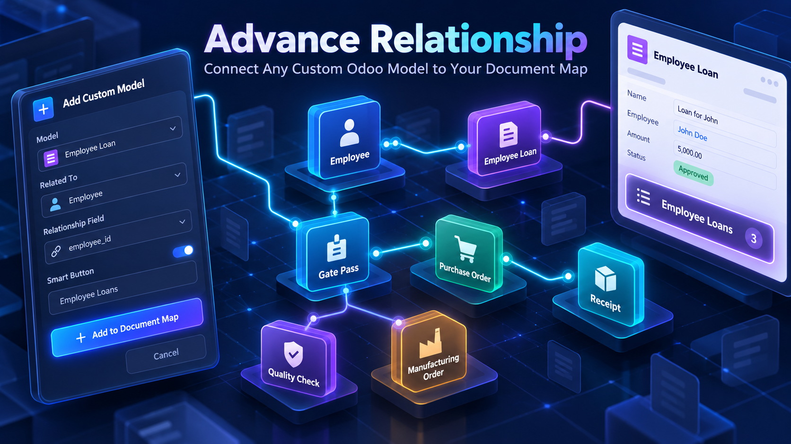
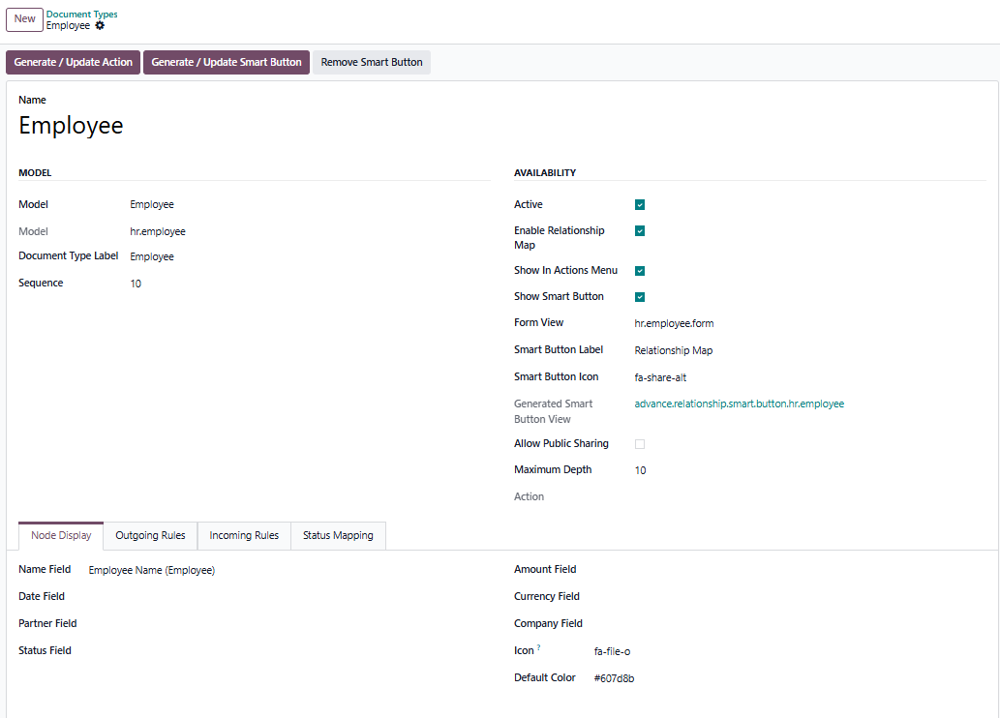
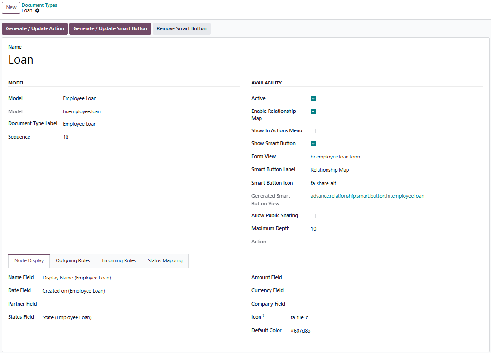
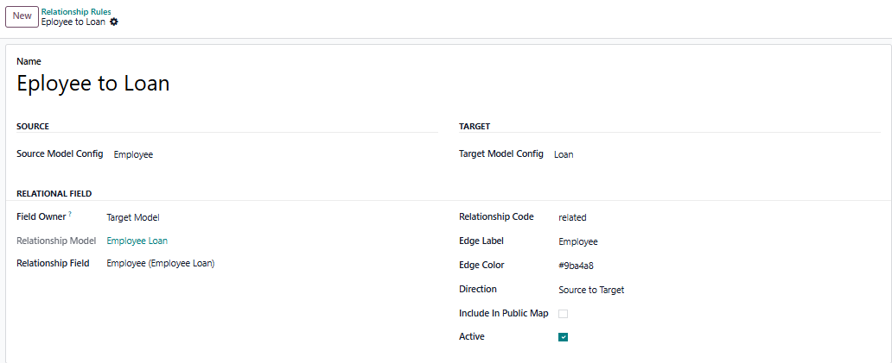
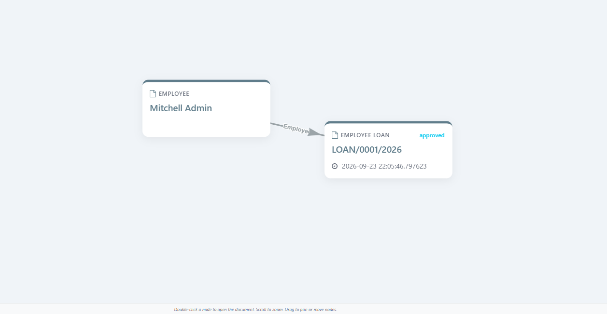

Odoo implementation, customization, integration, training and support for growing organizations.
Since 2019, Affinity Business Suite has delivered practical ERP solutions across Pakistan, the Middle East, North America and the United Kingdom. Our applications are designed around real operational needs, secure Odoo standards and dependable business workflows.

Connect Employee Loan, Gate Pass, approvals and any other custom Odoo model to the same visual document relationship map.
Odoo 19 Custom Models EUR 125Register Employee Loan, Gate Pass, vendor approval, internal request or another custom business document.
Build accurate relationships through Many2one, One2many or Many2many fields instead of unreliable text matching.
Create or update a Relationship Map smart button on the selected form, including forms without a standard button box.
Generate a contextual Relationship Map action for operational users and keep it available as a fallback.
Select name, date, status, amount, currency, partner, company, icon and color fields for each document type.
Convert technical states into clear business labels and visual categories on the relationship graph.




Affinity Business Suite provides installation, configuration, custom relationship design and functional support.
Email: info@affinitysuite.net | Website: https://affinitysuite.net